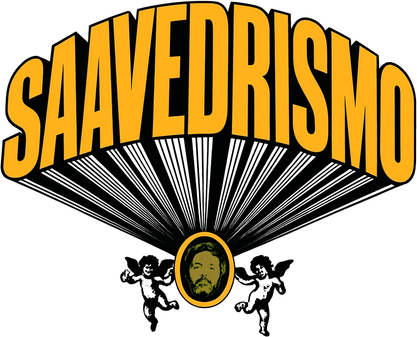
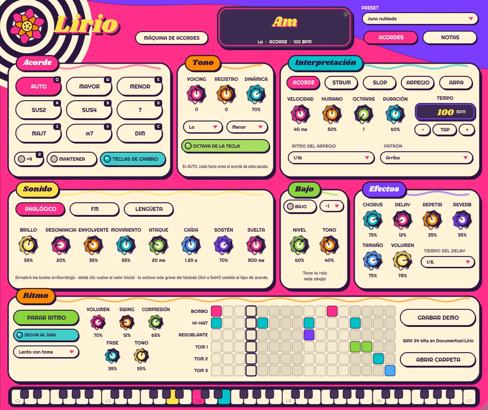
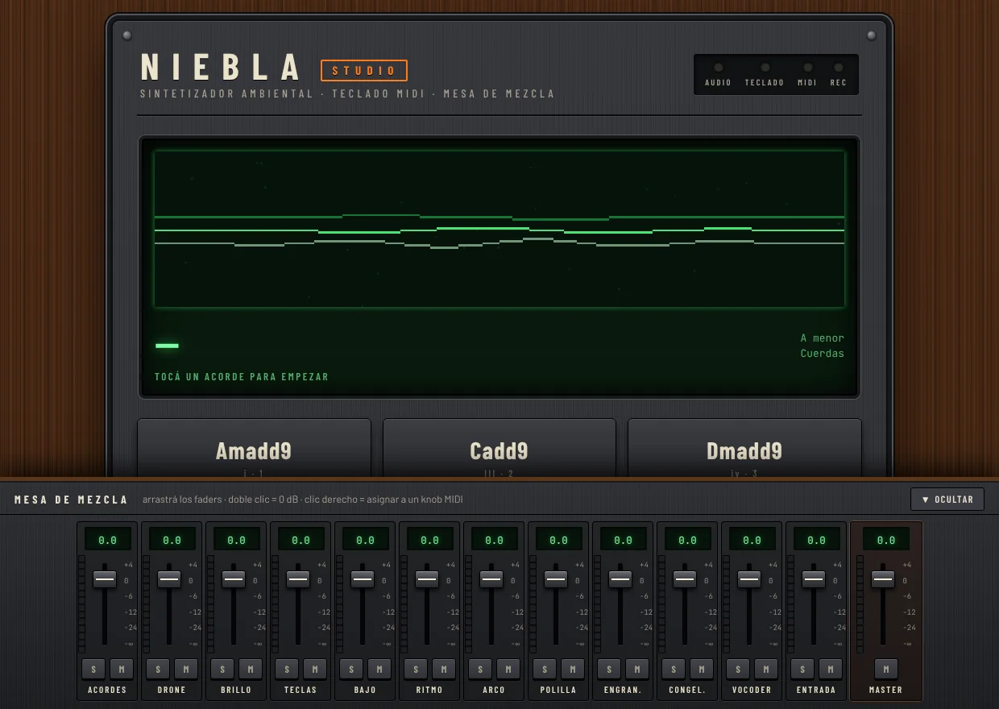
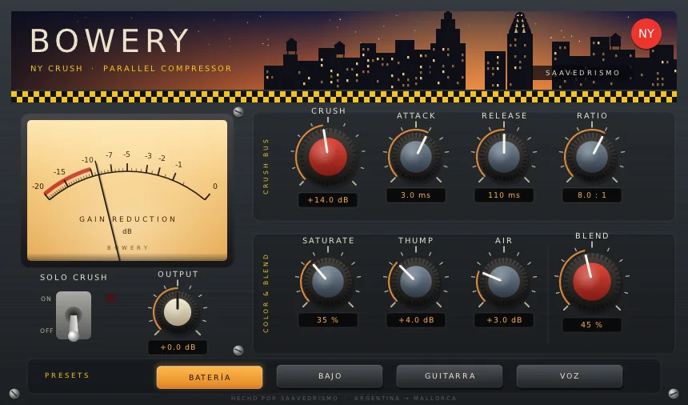
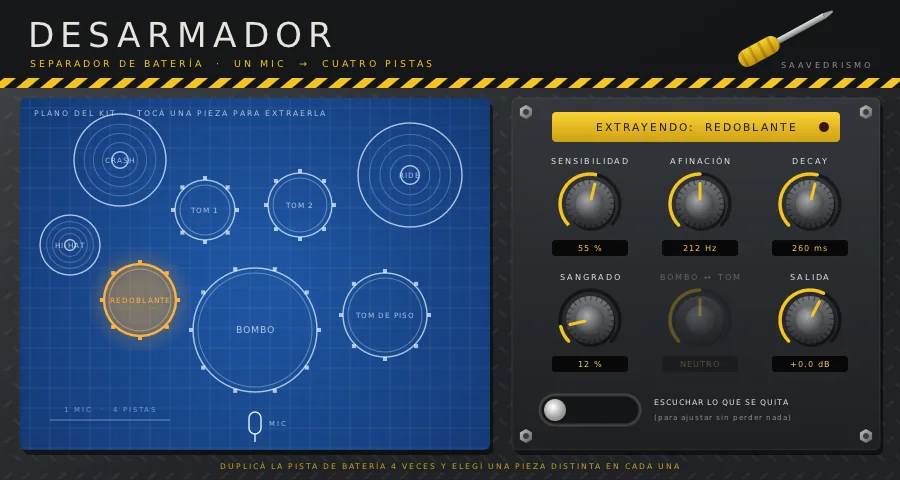
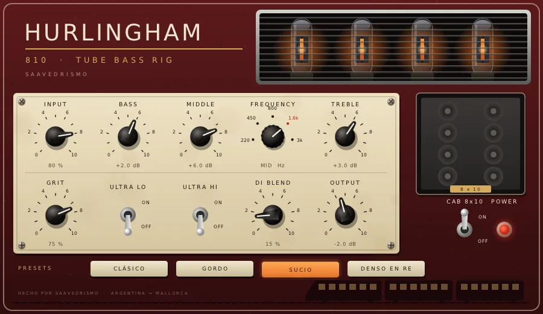
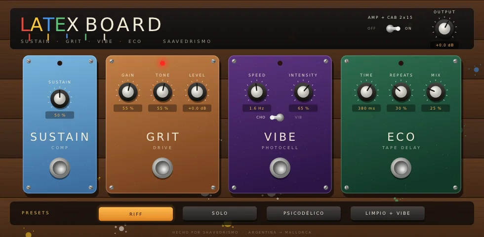

Banda · desde 2002
ENLACE
Mi primer proyecto serio. Donde descubrí que lo mío era hacer canciones y compartir la música con otros músicos.

Me gusta tocar todos los instrumentos, pero lo que mejor me sale es hacer canciones. Empecé en 2002 con ENLACE y, después de emigrar a España, arranqué Saavedrismo, mi proyecto solista. Acá está todo: los discos, las piezas instrumentales y las herramientas que me armé para grabarlas.
Se escuchan acá mismo. Si te gustan, en Bandcamp los podés bajar en buena calidad y bancar el proyecto.
EP · 2024
Mi primer EP solista: cuatro canciones nuevas y, de yapa, “Hombre Feo”, una de ENLACE, mi primera banda.
Deja de Suponer · Cuentas Magicas · Fin Du Monde · Exigir · Hombre Feo (Enlace)
Todo junto en saavedrismo.bandcamp.com. Videos en YouTube y lo del día a día en Instagram.
Piezas largas e instrumentales, tocadas de una sola vez. Bandas sonoras para películas que todavía no se filmaron: la imagen la ponés vos.
Unos quince minutos tocando Niebla en vivo, con la lluvia de fondo e imágenes de Alaró en un día de lluvia.
Me gusta tocar todos los instrumentos. No me considero especialmente bueno en ninguno, pero lo que creo que me sale mejor es hacer canciones.
Empecé en 2002 con mi banda, ENLACE, donde fui siempre cantante y compositor. A lo largo de los años hubo varias formaciones, y también toqué la guitarra y después la batería.
Después de emigrar a España arranqué Saavedrismo, mi proyecto solista: mi espacio para experimentar, crear libremente y documentar la música sin intermediarios. Hoy también toco en varias bandas. La música es el hilo que une todas las etapas de mi vida.
Banda · desde 2002
Mi primer proyecto serio. Donde descubrí que lo mío era hacer canciones y compartir la música con otros músicos.
Acá les dejo una serie de herramientas digitales para hacer música, que hice con la ayuda de “Claudito”. Soy Nico Saavedra, músico y técnico informático: las necesitaba para grabar mis canciones y ahora las pueden bajar, usar y compartir.
Para tocar con un teclado MIDI, con el mouse o con el teclado de la compu. Funcionan como programa, en el navegador sin instalar nada, y Lirio también adentro de tu DAW.

Una máquina de acordes: cada tecla toca un acorde completo.
Elegís la tonalidad y Lirio arma los acordes que pertenecen a la escala, o elegís vos el tipo de acorde. Con una mano tocás progresiones enteras, en bloque, rasgueadas como una guitarra o arpegiadas al tempo. Su sonido está inspirado en los teclados y la psicodelia de Tame Impala.
Windows: plugin VST3 y programa independiente. Mac: plugin AU y VST3 (Ableton, Logic, GarageBand…) y programa independiente. Mac con chip M o Intel. Navegador: la misma máquina, sin instalar (teclado MIDI en Chrome o Edge).
Versión 1.4. Software libre (GPLv3): código fuente.

Un sintetizador de ambientes: acordes que quedan flotando, texturas y una mesa de mezcla.
Tocás un acorde y Niebla lo deja sonando como un colchón, con cinta, eco y una reverb enorme. Encima sumás capas que reaccionan a lo que suena, y mezclás todo como en una consola. Está inspirado en los ambientes sonoros que crea Warren Ellis para su música y la de Nick Cave.
Programa independiente para Windows (64 bits) y Mac (chip M o Intel, macOS 12 o más nuevo), o directo en el navegador.
La misma Niebla acomodada para una pantalla grande 16:9: acordes, sonido, efectos, ritmo, capas y mesa de mezcla en una sola vista. Se instala aparte, así podés tener las dos.
Versión 1.1. El programa arranca siempre con el sonido de fábrica (conserva tus knobs MIDI y tu interfaz de audio). La versión del navegador funciona mejor en Chrome o Edge (el teclado MIDI necesita uno de esos). Usá auriculares si vas a usar el micrófono.
Plugins VST3 para Windows (64 bits). Funcionan en Cakewalk/Sonar, Reaper, Ableton, FL Studio, Studio One y cualquier DAW que cargue VST3. Cada zip trae el plugin y un LEEME con los controles.

Compresor paralelo: suma por debajo una copia aplastada de la señal.
La técnica de compresión "Nueva York" en un solo plugin: la señal original pasa intacta y vos decidís cuánto de la versión aplastada le sumás. La batería crece, la sala respira y los golpes no se pierden.

Separa una batería grabada con un solo micrófono en bombo, redoblante, toms y platillos.
Duplicás la pista, ponés Desarmador en cada copia y elegís en el plano qué pieza querés. Detecta cada golpe y deja pasar solo esa pieza, así podés ecualizarla, comprimirla o subirla por separado.

Un equipo valvular de bajo para rock pesado: preamp, ecualizador, distorsión y caja 8x10.
Para grabar el bajo directo a la placa y que suene a ampli empujado: grave firme y un medio granulado que corta la mezcla. La distorsión trabaja solo sobre los medios, así el grave nunca se ensucia. Lo hice buscando un sonido como el de Diego Arnedo.

Una pedalera de guitarra psicodélica: sustain, overdrive, vibe y eco de cinta.
Cuatro pedales en cadena y un ampli limpio con caja 2x15, para grabar la guitarra directo. El overdrive mezcla señal limpia con la saturada y el eco se estira como una cinta cuando le movés el tiempo. Lo hice buscando un sonido como el de Ricardo Mollo.
Los programas no tienen una firma digital paga, así que la primera vez Windows y macOS te van a avisar que no conocen al desarrollador. Es normal con cualquier programa sin firma; se destraba una sola vez.
.vst3 en C:\Program Files\Common Files\VST3\destrabar.command y elegí Abrir. En macOS 15 o más nuevo: Ajustes del Sistema, Privacidad y seguridad, "Abrir igualmente".